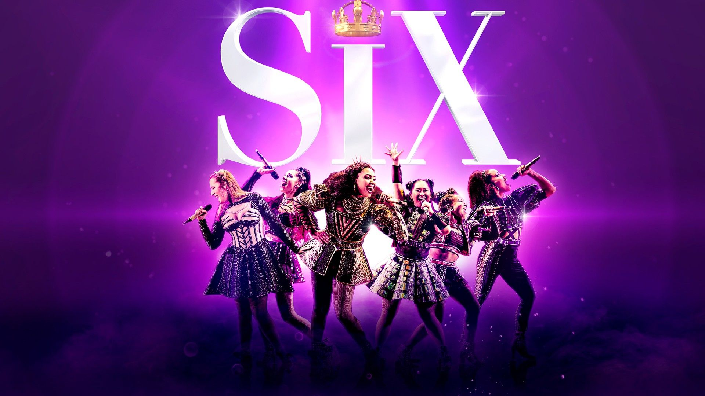
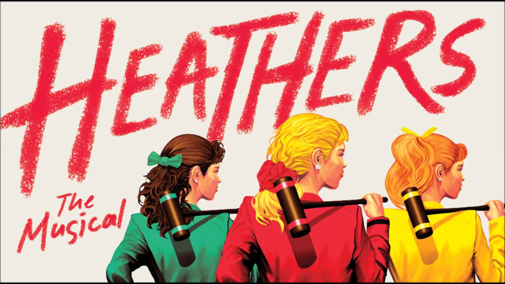

SONG OF THE DAY

Lover by Taylor Swift
This song was written by Taylor Swift for the purpose of making music that, in a lot of ways, felt timeless and confessional. Jack Antonoff helped produce LOVER.
They wanted to make music that could've been played on a wedding reception stage in 1970. It truly is one of my favorites as it gives you a sense of calmness and nostalgia.
It's magical!
DAILY MUSICALS
Six: The Musical

From Tudor Queens to Pop Princesses, the SIX wives of Henry VIII take the mic to remix five hundred years of historical heartbreak into an exuberant celebration of 21st century girl power!
Heathers: The Musical

Heathers: The Musical is the "darkly delicious story of Veronica Sawyer, a brainy, beautiful teenage misfit who hustles her way into the most powerful and ruthless clique at Westerburg High: the Heathers.